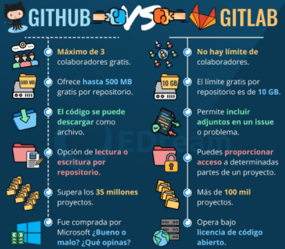
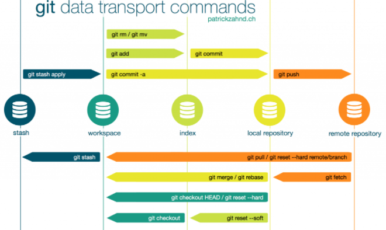
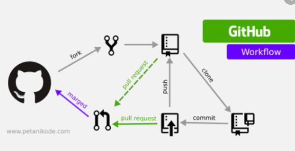

|
GIT & GITHUB
C O N T E N I D O
|
|
GIT & GITHUB
C O N T E N I D O
|
Git fue disenado y desarrollado por Linus Torvalds en 2005 para el desarrollo del kernel de Linux (1). La licencia de Git es libre y hay distribuciones oficiales para los sistemas operativos OS X, Windows, Linux y Solaris. Segun Ian Skerrett (2), si en 2011 mas de la mitad de los programadores encuestados utilizaban como herramienta principal el SCV centralizado Subversion (51,3 %) y solo un 12,8 % utilizaba Git, hoy casi la mitad de los programadores usan Git o GitHub (41,9 %) seguido de Subversion (30,7 %).
Imagen tomada de https://edteam-media.s3.amazonaws.com/community/original/9f645716-a316-4297-b1be-d2cbd23e4853.jpg
GitHub es un servicio comercial de alojamiento de repositorios Git remotos creado en el ano 2008. GitHub proporciona una interfaz Web que permite al usuario registrado crear y gestionar repositorios Git remotos. Además del alojamiento, GitHub proporciona a cada repositorio una wiki, un gestor de tareas, un sistema de gestión de comentarios, un cuadro de control e, incluso, una página web propia. Hay que hacer notar que GitHub no es un proyecto de código abierto. Sin embargo, existen actualmente soluciones de software abierto como Gitorious y GitLab que permiten instalar en servidores propios un servicio de alojamiento de repositorios remotos con herramientas similares a las que ofrece GitHub. GitHub está considerado como la plataforma de alojamiento de repositorios remotos más popular. En abril de 2015, el número de usuarios es más de 9,4 millones y el número de repositorios alcanza los 22,4 millones (3). Además, se estima que en 2014 había más 1200 cursos y 70.000 estudiantes utilizando este tipo de cuentas (4)
Imagen tomada de https://s3.amazonaws.com/media-p.slid.es/uploads/479298/images/4043813/Screen-Shot-2015-06-24-at-8.37.13-PM-1024x663.png
Imagen tomada de https://www.google.com/url?sa=i&url=https%3A%2F%2Fwww.c-sharpcorner.com%2Farticle%2Fgit-and-github-version-control-local-and-remote-repository%2F&psig=AOvVaw277R3Ae2QQAlskB8reiZuX&ust=1604696086145000&source=images&cd=vfe&ved=0CAIQjRxqFwoTCNjRpvak7OwCFQAAAAAdAAAAABAJ